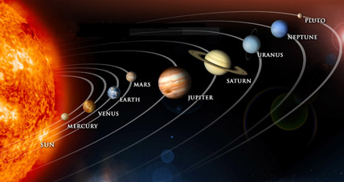

El sistema solar es el sistema planetario que liga gravitacionalmente a un conjunto de objetos astronómicos que giran directa o indirectamente en una órbita alrededor de una única estrella conocida con el nombre de Sol. La estrella concentra el 99,86 % de la masa del sistema solar y la mayor parte de la masa restante se concentra en ocho planetas cuyas órbitas son prácticamente circulares y transitan dentro de un disco casi llano llamado plano eclíptico. Los cuatro planetas más cercanos, considerablemente más pequeños Mercurio, Venus, Tierra y Marte, también conocidos como los planetas terrestres, están compuestos principalmente por roca y metal.78 Mientras que los cuatro más alejados, denominados gigantes gaseosos o «planetas jovianos», más masivos que los terrestres, están compuestos de hielo y gases. Los dos más grandes, Júpiter y Saturno, están compuestos principalmente de helio e hidrógeno. Urano y Neptuno, denominados gigantes helados, están formados mayoritariamente por agua congelada, amoniaco y metano. El Sol es el único cuerpo celeste del sistema solar que emite luz propia, debido a la fusión termonuclear del hidrógeno y su transformación en helio en su núcleo.El sistema solar se formó hace unos 4600 millones de años a partir del colapso de una nube molecular. El material residual originó un disco circumestelar protoplanetario en el que ocurrieron los procesos físicos que llevaron a la formación de los planetas.El sistema solar se ubica en la actualidad en la nube Interestelar Local que se halla en la Burbuja Local del brazo de Orión, de la galaxia espiral Vía Láctea, a unos 28000 años luz del centro de esta.
Los planetas y los asteroides orbitan alrededor del Sol, aproximadamente en un mismo plano y siguiendo órbitas elípticas (en sentido antihorario, si se observan desde el Polo Norte del Sol); aunque hay excepciones, como el cometa Halley, que gira en sentido horario.39 El plano en el que gira la Tierra alrededor del Sol se denomina plano de la eclíptica, y los demás planetas orbitan aproximadamente en el mismo plano. Aunque algunos objetos orbitan con un gran grado de inclinación respecto de este, como Plutón que posee una inclinación con respecto al eje de la eclíptica de 17º, así como una parte importante de los objetos del cinturón de Kuiper. Según sus características, los cuerpos que forman parte del sistema solar se clasifican como sigue:
Algunas de las más antiguas civilizaciones concibieron al universo desde una perspectiva geocéntrica, como en Babilonia en donde su visión del mundo estuvo representada de esta forma. En Occidente, el griego presocrático Anaximandro declaró a la Tierra como centro del universo, imaginó a esta como un pilar en forma de tambor equilibrado en sus cuatro puntos más distantes lo que, en su opinión, le permitió tener estabilidad. Pitágoras y sus seguidores hablaron por primera vez del planeta como una esfera, basándose en la observación de los eclipses; y en el siglo IV a. C.